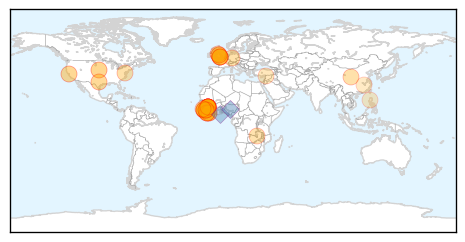
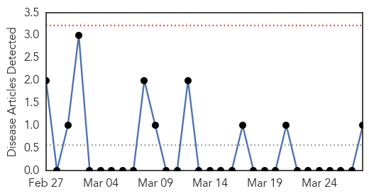

Ebola
30-Day Web Trend
0 alerts, 0 warnings
30-Day Twitter Trend
0 alerts, 0 warnings
Article Locations
Article Confidences
Top Articles:
- 1.000
- Study Finds No Evidence Of Accelerated Ebola Virus Evolution In West Africa
- 1.000
- Ebola outbreak leads to a 3 day quarantine in the Sierra Leone
- 0.999
- Liberia's sole remaining known Ebola patient dies
- 0.999
- Ebola in West Africa: The Importance of “Getting to Zero”
- 0.999
- Battling Ebola in Guinea and Sierra Leone Finally Shows Progress
- 0.999
- Liberia's last Ebola patient dies from virus
- 0.999
- Guinea president declares 45-day Ebola 'emergency' in 5 regions
- 0.999
- Sierra Leone Under 3-Day Ebola Lockdown
- 0.999
- Update on the three new cases
- 0.998
- Sierra Leoneans to stay home in final push to stop Ebola
- 0.998
- Sierra Leone residents staying home to stop Ebola
- 0.997
- Norway adjusts its Ebola response
- 0.997
- Sierra Leone in a Three-Day Anti-Ebola Lockdown
- 0.996
- Why pandemic disease and war are so similar
- 0.996
- Ebola vaccine effective in primates
- 0.995
- Ebola survivor: Anna Cross gets new treatment from China
- 0.993
- British nurse cured of Ebola by new treatment
- 0.993
- UK nurse cured of Ebola after receiving new treatment
- 0.993
- High hopes for new Ebola drug given to military nurse Anna Cross
- 0.993
- Sierra Leone Still Suffers From Ebola But China's Aid Is Honored
- 0.989
- Ebola crisis 'exposed failures of aid system'
- 0.981
- 25-year-old British nurse treated with experimental Ebola drug from China cured of disease
- 0.978
- Sierra Leone in Ebola lockdown
- 0.972
- Study Suggests Ebola is More Deadly for Babies, Young Children
- 0.970
- UK nurse cured of Ebola after receiving new treatment
- 0.962
- Google Has Made A Tablet In Fight Against Ebola
- 0.956
- Ebola antibodies in Zambia bats match W. African virus species
- 0.941
- Everyone loses if Ebola battle falters at this stage
- 0.938
- Ebola lockdown divides Sierra Leon, Guinea attempts to prevent border crossing
- 0.930
- Police fire tear gas on crowd during Sierra Leone Ebola lockdown
- 0.898
- Nebraska Biocontainment Unit celebrates 10th anniversary
- 0.887
- Briton with Ebola cured after taking new drug
- 0.866
- UPDATE 1-Police fire tear gas on crowd during Sierra Leone Ebola lockdown
- 0.839
- News, Sports, Jobs, Community Information - Parkersburg News and Sentinel
- 0.803
- Inside the suitcases of women doing some of the most dangerous jobs in the world
- 0.795
- British military nurse successfully treated for Ebola
- 0.782
- Sierra Leone: Citizens Told to Stay Home to Halt Ebola
- 0.725
- Alta Bates Summit Medical Center penalized for violating hospital safety rule.
- 0.703
- Life-and-death issue
- 0.686
- Africa: Fruitful Outcomes from Fifth China-Africa Health Roundtable
- 0.676
- Alta Bates fined for serious safety violation
- 0.616
- British Ebola patient is cured after experimental treatment
- 0.607
- U.K. nurse cured of Ebola
- 0.603
- Biocontainment unit celebrates 10 years, successful treatment of Ebola
- 0.518
- How Would-Be Republican Presidential Candidates Score on Science
- 0.511
- Strawberries And Cream: British Nurse Cured Of Ebola Credits New Drug And Summer Fruits
Top Tweets:
- 0.970
- Ebola outbreak: Sierra Leone in lockdown - BBC News http://t.co/D3BwSgg5Jb ebola EVD
- 0.962
- Researchers find Ebola virus not undergoing rapid mutations - The Week Magazine http://t.co/OgR0tHyM10 ebola EVD
- 0.895
- Guinea president announces new emergency measures in Ebola fight - Reuters http://t.co/eowBnqnC83 ebola EVD
- 0.765
- Police fire tear gas on crowd during Sierra Leone Ebola lockdown - Reuters http://t.co/IrPZWZLBqI ebola EVD
- 0.751
- Aid workers racing to defeat Ebola before the rains come - USA TODAY http://t.co/yc1YLCZNnI ebola EVD
- 0.734
- Indefinite Safe Sex Urged for Liberian Ebola Survivors - New York Times http://t.co/Id9O4zymkc ebola EVD
- 0.705
- The Guinea Forest Region has not recorded any Ebola cases since 6 March, but case searching continues. EbolaResponse
- 0.652
- Corporal Anna Cross cured of Ebola says 'Eating strawberries saved my life' - Daily Mail http://t.co/QOsHyFGPC5 ebola EVD
- 0.573
- Just 10 districts in Guinea Liberia & SierraLeone reported a confirmed Ebola case in wk to 22 March http://t.co/G5FaGk7XHV EbolaResponse
- 0.565
- RT: ZeroEbola. three-day lockdown to curb the spread of Ebola. @wfp & @welthungerhilfe provides Food & VegOil. @UNMEER http://t…
- 0.537
- RT: VIDEO: Toutes les Forces Vives de Guinée Contre Ebola EbolaResponse https://t.co/Devz0O5j2D
- 0.537
- Ebola's fast evolution questioned - http://t.co/z2Rjnutn9L http://t.co/shXRJ3RvgS ebola EVD
- 0.533
- RT: Liberia's sole remaining known Ebola patient dies http://t.co/Y4gmMlmHGE
Mold/Fungal
30-Day Web Trend
0 alerts, 0 warnings

30-Day Twitter Trend
0 alerts, 0 warnings

Article Locations

Article Confidences

Top Articles:
Top Tweets:
-
No tweets found for Mar 28, 2015